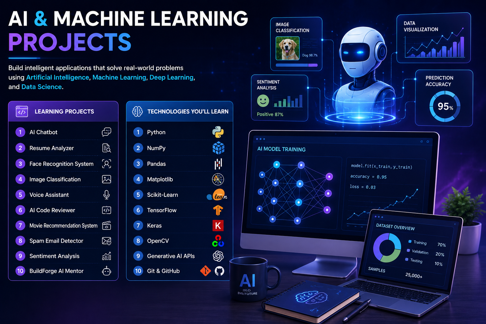
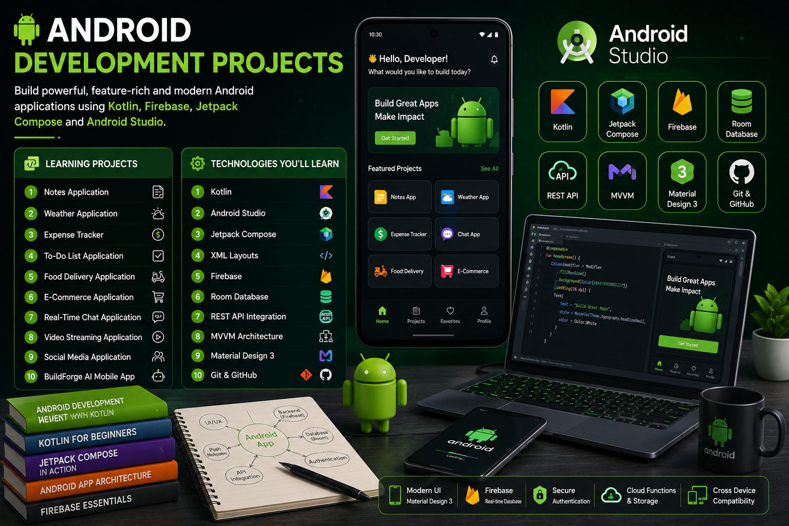
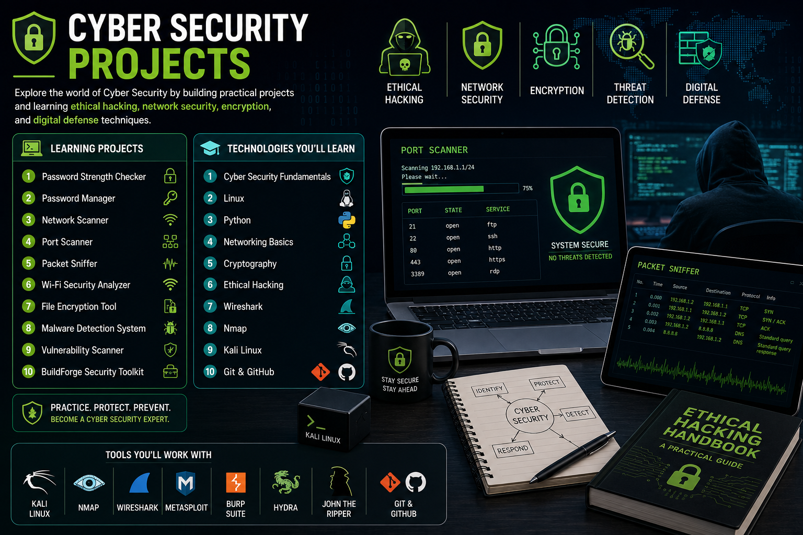
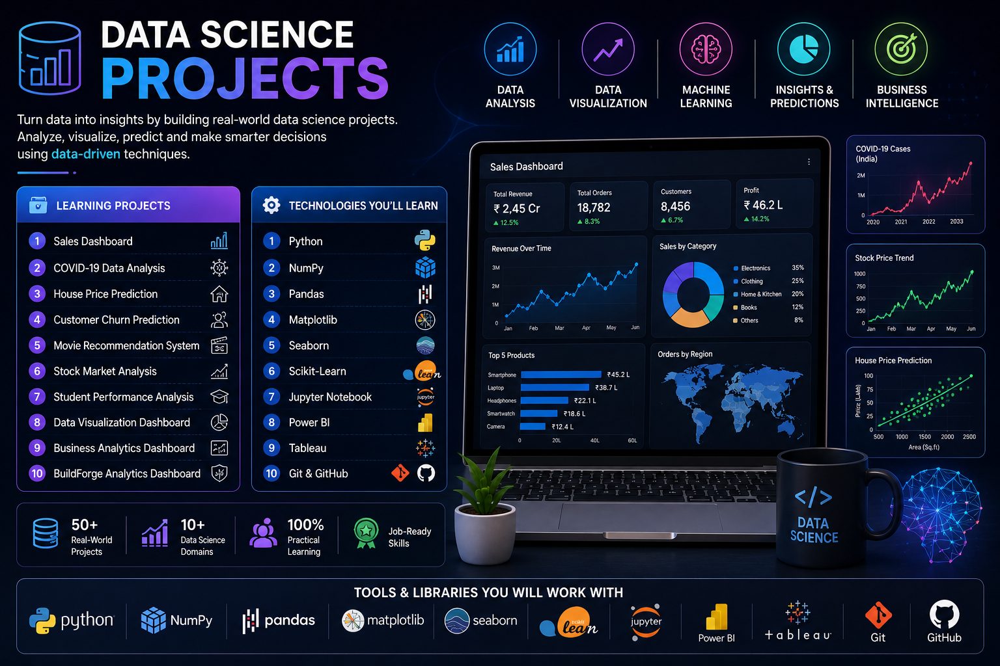
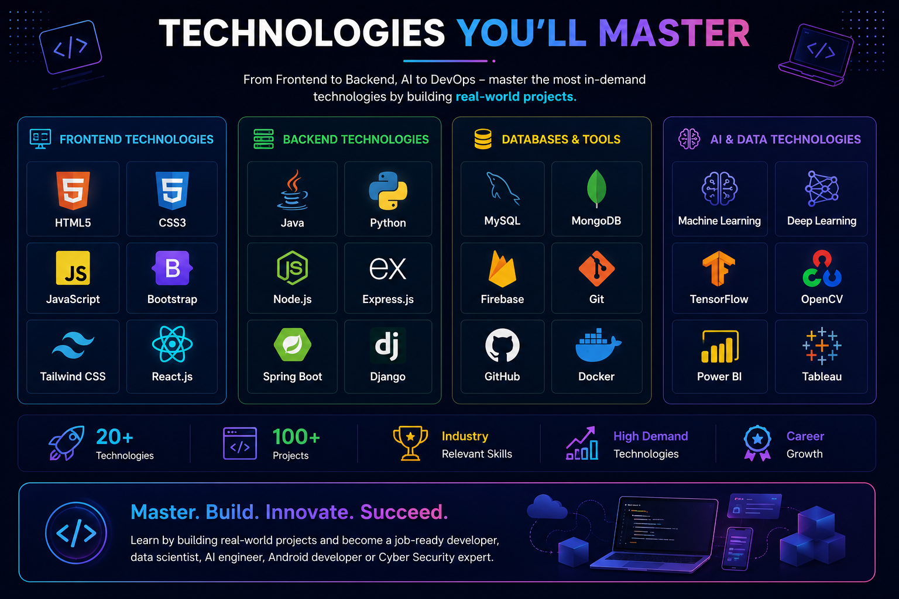
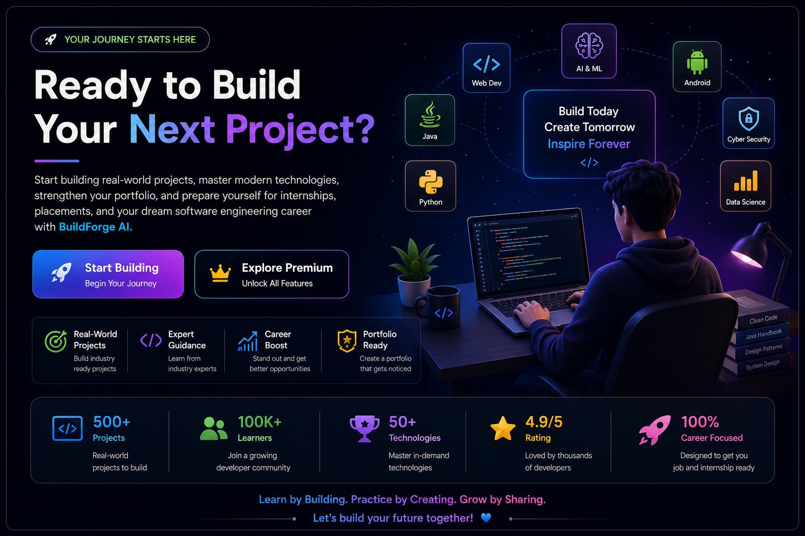

Gain practical experience by building real-world projects across
Web Development, Java, Python, Artificial Intelligence, Android,
Cyber Security, and Data Science. Enhance your portfolio, improve
your problem-solving skills, and prepare yourself for internships,
placements, and software engineering careers.
Learn by building industry-ready projects designed to help
you become a confident developer and create an impressive
portfolio for your dream career.
Featured Projects
Explore our most popular and industry-ready projects carefully
designed to help students build practical skills, strengthen
their portfolios, and prepare for internships and placements.
E-Commerce Website
Responsive User Interface
Product Management System
Shopping Cart & Wishlist
User Authentication
Secure Payment Integration
Admin Dashboard
Order Management
Database Integration
Deployment Ready
Portfolio Ready Project
AI Resume Builder
AI Resume Generator
ATS Resume Analysis
Multiple Resume Templates
Resume Score Checker
PDF Export
Cover Letter Generator
Skills Recommendation
Project Suggestions
Modern UI Design
Industry Ready Project
Real-Time Chat Application
Real-Time Messaging
User Authentication
Private Chat
Group Chat
File Sharing
Typing Indicator
Online Status
Push Notifications
Responsive Design
Deployment Ready
Build real-world projects and gain practical experience
with industry-standard technologies.
Web Development Projects
Master frontend, backend, and full-stack development by building
modern web applications using the latest technologies and industry
best practices.
Learning Projects
Personal Portfolio Website
Landing Page Design
Weather Application
To-Do List Application
Blog Website
Netflix Clone
Amazon Clone
E-Commerce Website
Learning Management System
BuildForge AI Clone
Technologies You'll Learn
HTML5
CSS3
JavaScript
Bootstrap
React.js
Node.js
Express.js
MongoDB
Git & GitHub
Deployment
Build modern, responsive, and full-stack web applications
to become an industry-ready web developer.
Java Development Projects
Build industry-ready Java applications by mastering Core Java,
Object-Oriented Programming, JDBC, Swing, JavaFX, Spring Boot,
and enterprise-level backend development.
Learning Projects
Student Management System
Library Management System
Bank Management System
Hospital Management System
Employee Management System
Online Examination System
Hotel Management System
Inventory Management System
E-Commerce Backend API
Spring Boot CRM Application
Technologies You'll Learn
Core Java
Object-Oriented Programming
Collections Framework
Exception Handling
JDBC
MySQL
Swing / JavaFX
Spring Boot
REST APIs
Git & GitHub
Learn Java by building practical desktop, backend,
and enterprise applications using industry-standard tools.
Python Development Projects
Learn Python by building practical applications in automation,
web development, data analysis, artificial intelligence, machine
learning, and desktop application development.
Learning Projects
Student Management System
Password Generator
Weather Application
Expense Tracker
Library Management System
Web Scraper
Face Recognition System
AI Chatbot
Machine Learning Prediction System
BuildForge AI Assistant
Technologies You'll Learn
Core Python
Object-Oriented Programming
File Handling
NumPy
Pandas
Matplotlib
Flask
Django
Machine Learning
Git & GitHub
Build automation tools, AI applications, web projects,
and data-driven solutions using Python.
AI & Machine Learning Projects
Explore the world of Artificial Intelligence and Machine Learning
by building intelligent applications using modern AI tools,
deep learning frameworks, and real-world datasets.
Learning Projects
AI Chatbot
Resume Analyzer
Face Recognition System
Image Classification
Voice Assistant
AI Code Reviewer
Movie Recommendation System
Spam Email Detector
Sentiment Analysis
BuildForge AI Mentor
Technologies You'll Learn
Python
NumPy
Pandas
Matplotlib
Scikit-Learn
TensorFlow
Keras
OpenCV
Generative AI APIs
Git & GitHub

Build intelligent applications using Artificial Intelligence,
Machine Learning, Computer Vision, and Generative AI.
Android Development Projects
Build modern Android applications using Kotlin, Firebase,
Jetpack Compose, and Android Studio. Learn to create
high-performance mobile applications with industry-standard
architecture and best development practices.
Learning Projects
Notes Application
Weather Application
Expense Tracker
To-Do List Application
Food Delivery Application
E-Commerce Application
Real-Time Chat Application
Video Streaming Application
Social Media Application
BuildForge AI Mobile Application
Technologies You'll Learn
Kotlin
Android Studio
Jetpack Compose
XML Layouts
Firebase
Room Database
REST API Integration
MVVM Architecture
Material Design 3
Git & GitHub

Develop modern Android applications with Kotlin,
Firebase, and Jetpack Compose to become an
industry-ready Android Developer.
Cyber Security Projects
Build practical cyber security projects and learn ethical hacking,
network security, encryption, penetration testing, and digital
defense techniques used by security professionals.
Learning Projects
Password Strength Checker
Password Manager
Network Scanner
Port Scanner
Packet Sniffer
Wi-Fi Security Analyzer
File Encryption Tool
Malware Detection System
Vulnerability Scanner
BuildForge Security Toolkit
Technologies You'll Learn
Cyber Security Fundamentals
Linux
Python
Networking Basics
Cryptography
Ethical Hacking
Wireshark
Nmap
Kali Linux
Git & GitHub

Learn ethical hacking, digital security, and network
protection by building real-world cyber security projects.
Data Science Projects
Learn Data Science by analyzing real-world datasets, creating
interactive dashboards, building predictive models, and
transforming raw data into meaningful business insights using
modern data science tools and technologies.
Learning Projects
Sales Dashboard
COVID-19 Data Analysis
House Price Prediction
Customer Churn Prediction
Movie Recommendation System
Stock Market Analysis
Student Performance Analysis
Data Visualization Dashboard
Business Analytics Dashboard
BuildForge Analytics Dashboard
Technologies You'll Learn
Python
NumPy
Pandas
Matplotlib
Seaborn
Scikit-Learn
Jupyter Notebook
Power BI
Tableau
Git & GitHub

Explore data-driven projects, build predictive models,
and master business intelligence with real-world datasets.
Technologies You'll Master
Build real-world projects using the most popular programming
languages, frameworks, databases, developer tools, and AI
technologies trusted by leading technology companies.
Frontend Technologies
HTML5
CSS3
JavaScript
Bootstrap
Tailwind CSS
React.js
Backend Technologies
Java
Python
Node.js
Express.js
Spring Boot
Django
Databases & Tools
MySQL
MongoDB
Firebase
Git
GitHub
Docker
AI & Data Technologies
Machine Learning
Deep Learning
TensorFlow
OpenCV
Power BI
Tableau

Master industry-standard technologies by building
practical projects from beginner to advanced level.
Ready to Build Your Next Project?
Start building real-world projects, master modern technologies,
strengthen your portfolio, and prepare yourself for internships,
placements, and your dream software engineering career with
BuildForge AI.

Learn by building. Practice with real-world projects.
Become industry-ready with BuildForge AI.